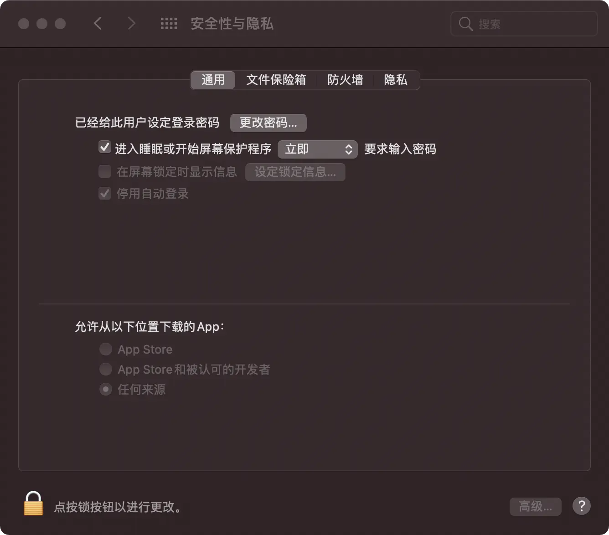

终端运行 sudo spctl --master-disable，选中 系统偏好设置 - 安全性与隐私 - 通用 - 允许从以下位置下载的 App: 任何来源
sudo spctl --master-disable
系统偏好设置
安全性与隐私
通用
允许从以下位置下载的 App: 任何来源

如果第二步完成后依旧失败，在终端运行
sudo xattr -rd com.apple.quarantine {app 路径}
下面以 Sketch.app 为例
sudo xattr -rd com.apple.quarantine /Applications/Sketch.app